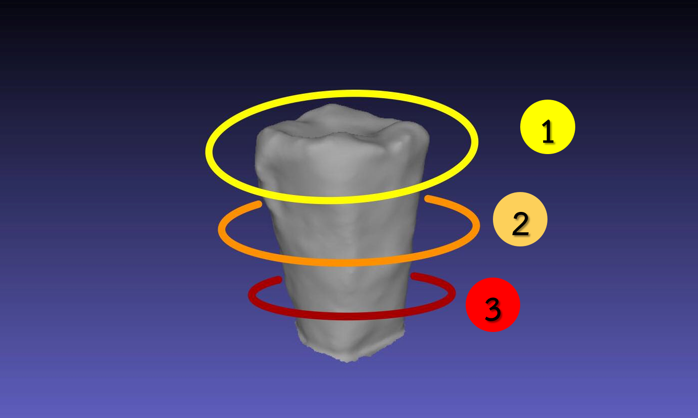

DentalGrammetry เว็บแอปพลิเคชันสำหรับสร้างแบบจำลอง 3 มิติของฟันเทียมพลาสติก
เว็บแอปพลิเคชั่นนี้จะทำการเปรียบเทียบแบบจำลอง 3 มิติของผู้ใช้งานกับแบบจำลองต้นแบบที่ถูกต้องของผู้เชี่ยวชาญที่มีในฐานข้อมูลเพื่อตรวจสอบการทับซ้อนกันของแบบจำลองทั้งสอง และแสดงผลลัพธ์เป็นเปอร์เซ็นความถูกต้องของแบบจำลอง 3 มิติ เพื่อใช้ในการฝึกทักษะทางด้านทันตกรรมประดิษฐ์ ผู้ใช้งานสามารถดำเนินการตามขั้นตอนดังนี้...

การเตรียมอุปกรณ์
- เพิ่มลวดลายให้กับฟันเทียมพลาสติก โดยใช้ละอองของสีสเปรย์อย่างน้อย 2 สีที่ต่างกันพ่นลงบนพื้นผิวของฟันเทียม หรือ ใช้ปากกาเมจิจุดลงบนฟันเทียมเพื่อให้วัตถุมีลวดลายทั่วทั้งอัน
- จานหมุนที่มีลวดลายโดยการติดสติ๊กเกอร์ลงบนจานหมุนเพื่อใช้สำหรับวางฟันเทียมพลาสติกในการถ่ายภาพ
- กล่องสตูดิโอสำหรับถ่ายภาพที่มีฉากหลังสีดำและมีไฟ LED ส่องจากด้านบนเท่านั้น
- สมาร์ทโฟนสำหรับถ่ายภาพที่มีกำลังขยายคูณ 2 และมีความละเอียดของภาพ 6 ล้านพิกเซลขึ้นไป

ขั้นตอนและเทคนิคการถ่ายภาพ
ผู้ใช้งานต้องถ่ายภาพของฟันเทียมพลาสติกที่ต้องการสร้างแบบจำลอง 3 มิติ ตามวิธีการของเทคนิค Photogrammetry คือ การถ่ายภาพวัตถุจากหลายๆมุมมองรอบวัตถุ โดยมีเทคนิคและขั้นตอนการถ่ายภาพ ดังนี้
ขั้นตอนการถ่ายภาพ
-

- นำฟันเทียมพลาสติกที่ทำการเพิ่มลวดลายแล้ววางบนกึ่งกลางของจานหมุนในกล่องสตูดิโอถ่ายภาพ
- เริ่มถ่ายภาพโดยการ แบ่งมุมกล้องที่ถ่ายวัตถุเป็น 3 ระดับ คือ มุมสูง(ด้านบนวัตถุ) มุมกลาง(ตรงกลางของวัตถุติดส่วนบนเล็กน้อย) มุมต่ำ(ส่วนล่างของวัตถุติดส่วนกลางเล้กน้อย)
- ในแต่ละระดับของวัตถุผู้ใช้งานจะต้องถ่ายภาพรอบวัตถุให้ครบทุกมุมมอง 360 องศาตามแนวแกน X โดยใช้จานหมุนในการหมุนวัตถุในแต่ละมุมมอง
เทคนิคเพิ่มเติมในการถ่ายภาพ
- ในภาพถ่ายทุกๆภาพวัตถุจะต้องมีขนาดเป็น 1 ส่วน 3 ของภาพ หรือประมาณ 30 เปอร์เซ็นต์ของภาพนั้นๆ
- แต่ละภาพควรมีมุมมองพื้นที่ของวัตถุทับซ้อนกันอย่างน้อย 60 – 80 เปอร์เซ็นต์
- จำนวนภาพทั้งหมดที่เหมาะสมในการสร้างแบบจำลองขั้นต่ำประมาณ 40 - 100 ภาพ
- ผู้ใช้งานสามารถใช้กำลังขยายของกล้องในการถ่ายได้